You commented, so here it is. These are the 11 most-starred skill repos for AI coding agents, ranked by GitHub stars. For each one you get what it does, what makes it good, and the exact command to install it.
New to skills? Read Skills 101 first, it takes a minute. Otherwise go straight to the list, or jump to Where To Start if you only have time to try one.
Click any row for the full breakdown. The bar shows stars relative to No.01.
A skill is a folder with a SKILL.md file in it: a name, a one-line description, and a set of instructions. Some also ship scripts, templates, or reference docs.
Think of it as a playbook your agent picks up when the job calls for it.
At the start of a session your agent only sees each skill's name and description, roughly 100 tokens apiece.
The full instructions load only when your task needs them, so installing a few skills doesn't bloat every conversation.
The same format works in Claude Code, Codex, Cursor, Gemini CLI, GitHub Copilot, OpenCode and a long tail of other agents.
Most repos on this list support several of them. Check each README for your tool.
npx skills add owner/repo
/plugin marketplace add owner/repo /plugin install name@marketplace
cp -r skill-name ~/.claude/skills/
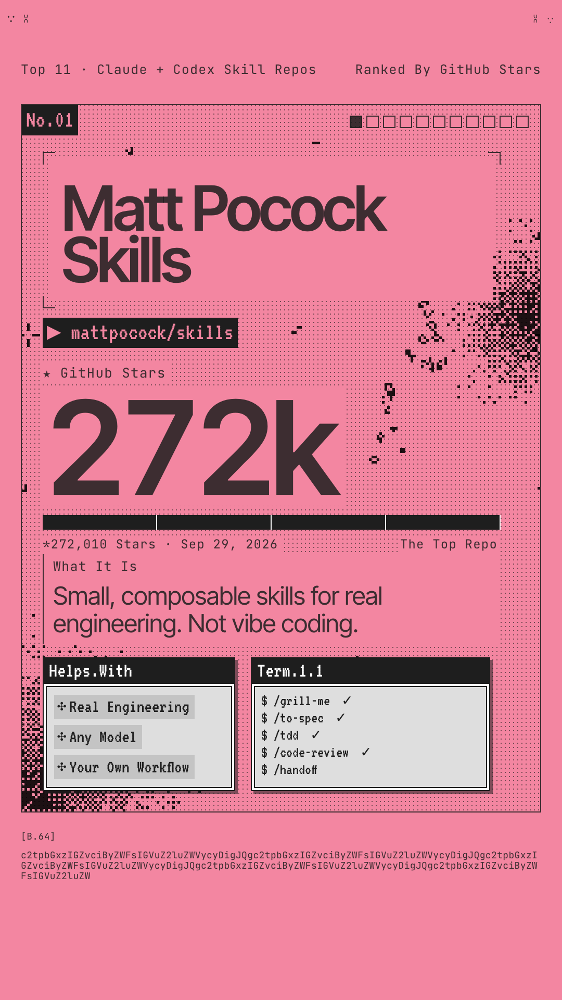
Matt Pocock's own skills, pulled straight from the .agents folder he uses every day. Each one targets a specific way coding agents fail: building the wrong thing, rambling, shipping code that doesn't run, and piling up a ball of mud. They're small, they work with any model, and they're built for you to edit.
/grill-me makes the agent interview you before it writes a line. These grilling skills are his most popular./grill-with-docs builds a shared project glossary as it goes, so the agent stops using 20 words where 1 will do./tdd enforces red-green-refactor, and /diagnosing-bugs runs a phase-by-phase debugging loop./improve-codebase-architecture scans for design problems and hands you a visual HTML report.# Claude Code
claude plugins install mattpocock-skills
# Codex and other agents
npx skills@latest add mattpocock/skills
Try this first: run /setup-matt-pocock-skills once per repo, then /grill-me before your next feature.
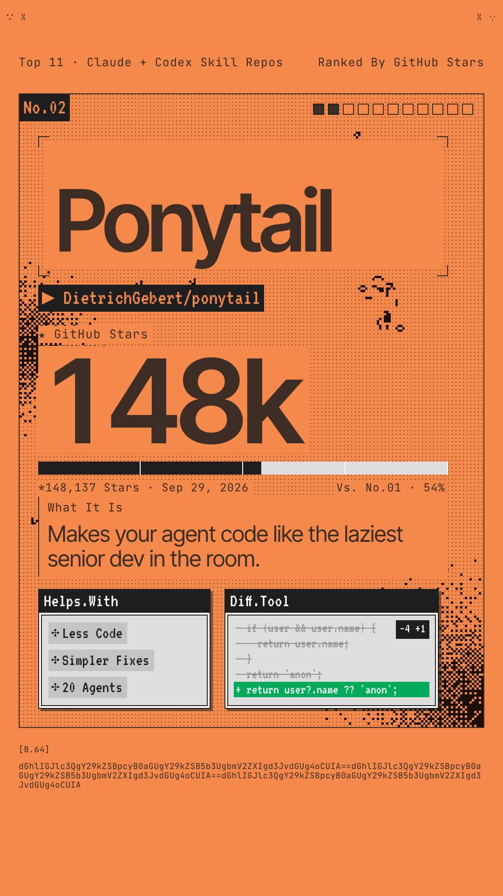
You know the guy. Long ponytail, oval glasses, been at the company longer than version control. You show him fifty lines and he replaces them with one. Ponytail puts him inside your agent: before it writes anything, it has to ask whether the code needs to exist at all.
<input type="date"> instead of a new library and a wrapper component.# Claude Code: send these as two separate prompts
/plugin marketplace add DietrichGebert/ponytail
/plugin install ponytail@ponytail
# Codex
codex plugin marketplace add DietrichGebert/ponytail
codex plugin add ponytail@ponytail
Heads up: the plugin runs two tiny Node.js hooks, so node needs to be on your PATH. Also ships for Copilot CLI, Gemini CLI, OpenCode and more.
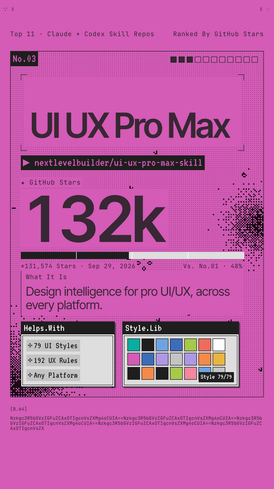
A searchable design database your agent consults before it builds UI. Say "build a landing page for my beauty spa" and it generates a full design system first: page pattern, visual style, color palette, font pairing, effects, the anti-patterns to avoid for that industry, and a pre-launch checklist.
# Claude Code
/plugin marketplace add nextlevelbuilder/ui-ux-pro-max-skill
/plugin install ui-ux-pro-max@ui-ux-pro-max-skill
# Any agent, via the CLI npm install -g ui-ux-pro-max-cli uipro init --ai claude # or cursor, codex, windsurf…
Try this first: just ask for UI in plain English, like "Build a landing page for my SaaS product." The skill kicks in on its own.
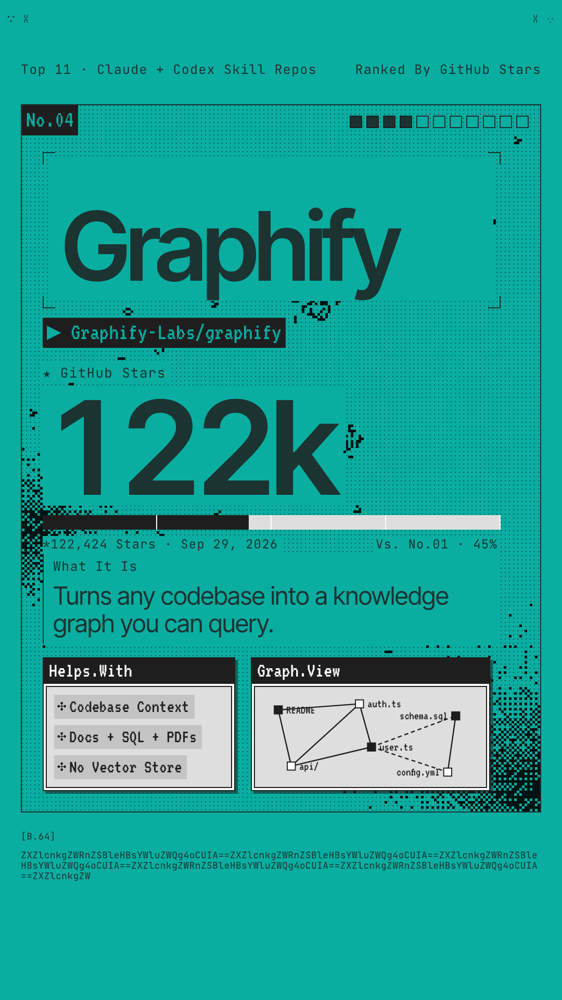
Type /graphify and it maps your whole project into a knowledge graph: code, docs, SQL schemas, configs, even PDFs. From then on your agent queries the graph instead of grepping through files, and you get a clickable map of how everything connects.
graph.html, a GRAPH_REPORT.md of highlights, and the full graph.json.# note the double y in graphifyy
uv tool install graphifyy
graphify install
Try this first: open your agent in any repo and type /graphify . then open graphify-out/graph.html in your browser.
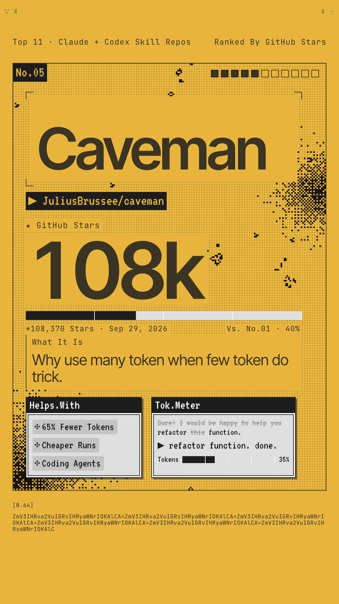
Why use many token when few token do trick. Caveman makes your agent answer like it just discovered fire: same diagnosis, same fix, none of the throat-clearing. Code, commands, file paths and error messages never get cavemanned, only the prose around them. It started as a Friday joke in April 2026.
/caveman lite for tight but polite, /caveman ultra for grunts./caveman-commit, /caveman-review, and /caveman-compress CLAUDE.md to slim your memory files.# The skill: one command, works in 30+ agents
npx skills add JuliusBrussee/caveman -g
Try this first: ask any coding question and watch the preamble disappear. Say stop caveman to get normal prose back.
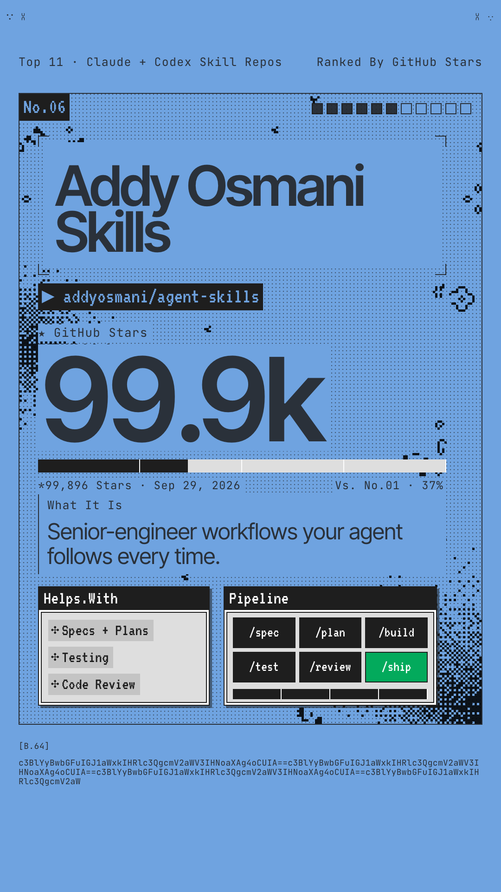
The workflows and quality gates a senior engineer uses, packaged so your agent follows them every time. It covers the whole lifecycle in six stages: define, plan, build, verify, review, ship. Each stage has its own slash command.
/spec, /plan, /build, /test, /review, /ship, plus /constraints, /webperf and /code-simplify./build auto: approve the plan once, and it implements every task in a single pass.# Any agent: all 25 skills
npx skills add addyosmani/agent-skills
# Claude Code plugin
/plugin marketplace add addyosmani/agent-skills
/plugin install agent-skills@addy-agent-skills
Try this first: run /spec on the next feature you're about to build, then /plan.
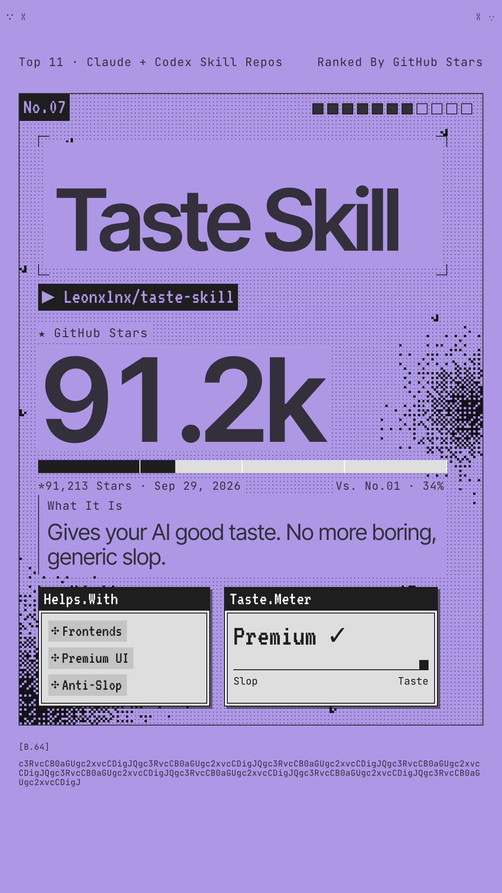
The anti-slop frontend framework. If your AI keeps shipping the same boilerplate landing page, this fixes the layout, typography, motion and spacing so it stops looking AI-made. It comes as a set of skills that each do one job, so you only install what you need.
# Everything
npx skills add https://github.com/Leonxlnx/taste-skill
# Just the default skill
npx skills add https://github.com/Leonxlnx/taste-skill --skill "design-taste-frontend"
Try this first: install the default skill, then ask your agent to rebuild a page it made last week. Compare the two.
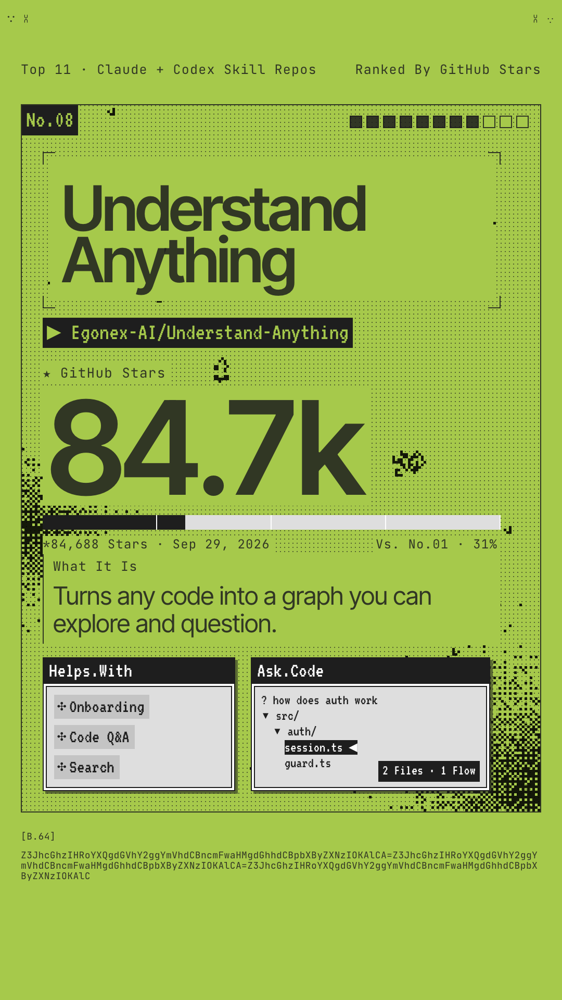
You just joined a new team and the codebase is 200,000 lines. Where do you start? A team of agents reads the whole project and builds an interactive graph of every file, function and class, with plain-English summaries, guided tours, and a chat you can ask questions. Their motto: graphs that teach beat graphs that impress.
/understand-dashboard opens a clickable graph, color-coded by architectural layer./understand-chat answers questions like "How does the payment flow work?"/understand-diff shows the impact of your current changes. /understand-onboard writes an onboarding guide for new teammates.# Claude Code
/plugin marketplace add Egonex-AI/Understand-Anything
/plugin install understand-anything
Try this first: /understand then /understand-dashboard. The first run on a big repo uses a lot of tokens, so do it on a subscription plan.
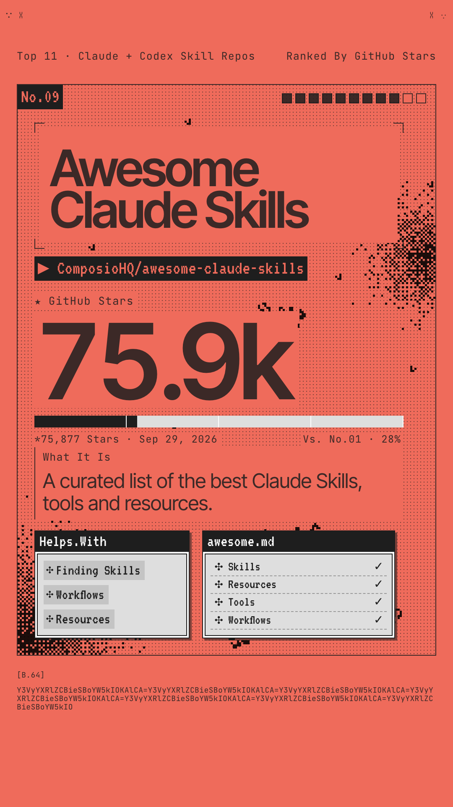
The directory. A hand-curated list of Claude skills, plugins and resources, sorted by what you're trying to get done. When nothing else on this page fits your job, this is where to look next.
# Nothing to install. Browse, then copy # the skill folder you want: cp -r skill-name ~/.claude/skills/
Try this first: open the list and search for your job title or the tool you use most.
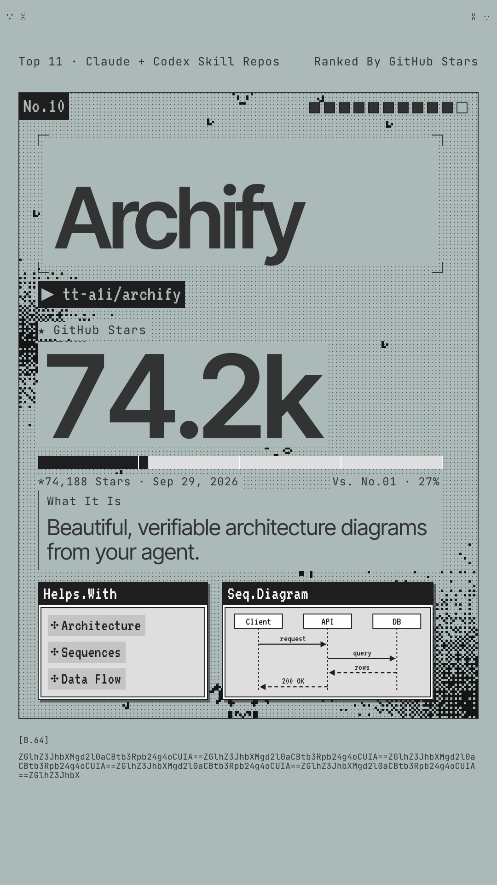
Describe a system in one sentence, or point it at a repo, and your agent draws a clean, interactive architecture diagram. The result is a single HTML file with motion, light and dark themes, and sharp exports. You don't need a repository to start.
npx skills add tt-a1i/archify -g
Try this first: "Use Archify to diagram a web request: Browser calls the API, the API checks Redis, and a cache miss queries PostgreSQL and fills the cache."
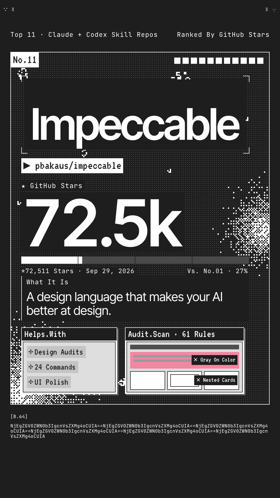
A shared design vocabulary between you and your agent. It started from Anthropic's frontend-design skill and adds commands for exactly what you want changed, plus a checker that catches the tells of AI-made UI: Inter everywhere, purple gradients, cards nested in cards, gray text on color.
polish, audit, critique, distill, bolder, quieter, typeset and harden./impeccable init writes a PRODUCT.md so every later command knows your audience and voice./impeccable live lets you iterate on elements right in the browser.# From your project root
npx impeccable install
# Then, inside your agent
/impeccable init
Try this first: /impeccable audit on your homepage and see how many AI tells it flags.
Don't install all eleven. Pick the problem you have right now and start there.
Start with Matt Pocock's grilling skills so the agent understands the job, then add Addy Osmani's lifecycle commands for the quality gates.
Taste Skill fixes the default look. Impeccable gives you words for what to change. UI UX Pro Max picks the palette and fonts before you start.
Graphify maps it fast and locally. Understand Anything walks you through it. Archify draws the diagram you'll show your team.
Caveman cuts the words and Ponytail cuts the code. They tackle different halves of the same bill.
The awesome list sorts skills by use case: documents, marketing, data, writing, security and more.
A skill is instructions your agent follows with your permissions. The file is plain Markdown, so skim it before you install. It takes two minutes.
Some of these, like Ponytail, Caveman's full installer and Impeccable, run small scripts or hooks. When your agent asks you to approve them, open them and read what they do.
Plugin or npx skills, not both. Installing a repo twice gives you every skill twice.
Skills that give overlapping advice can fight each other, especially design skills. Add one, use it for a week, then add the next.